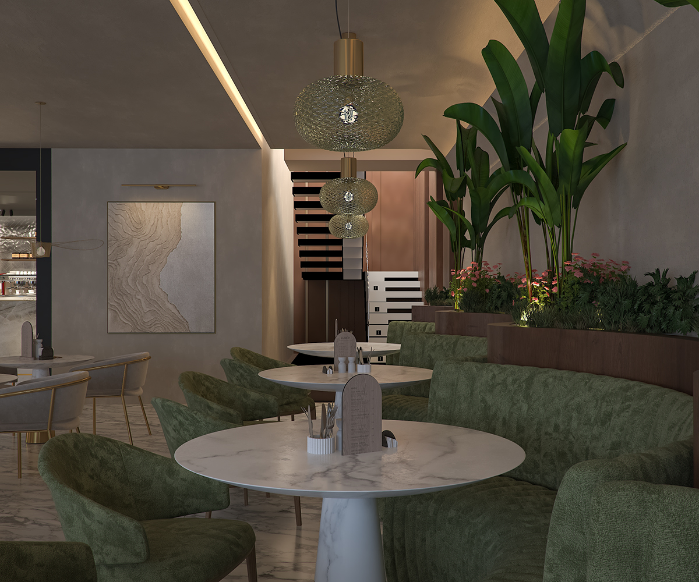
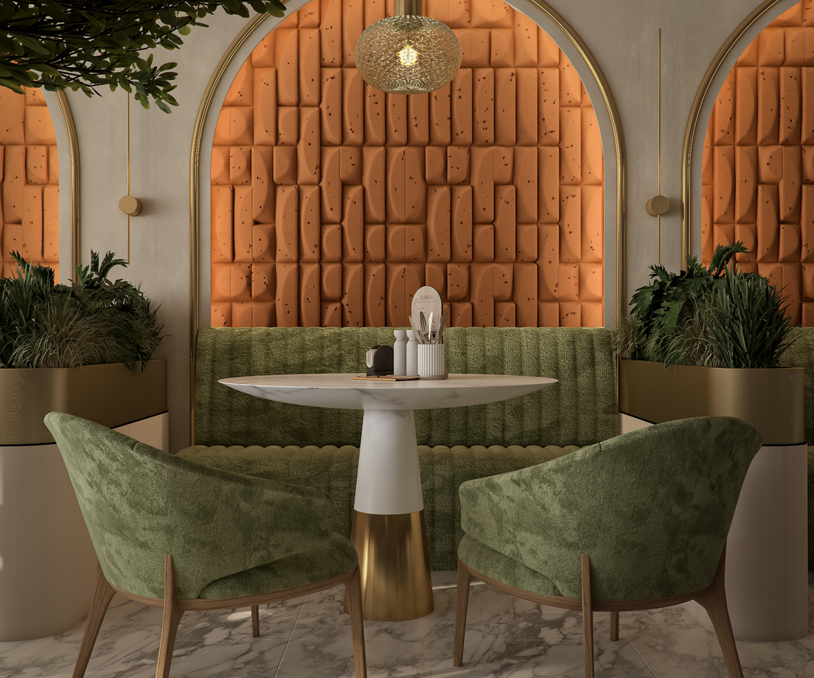
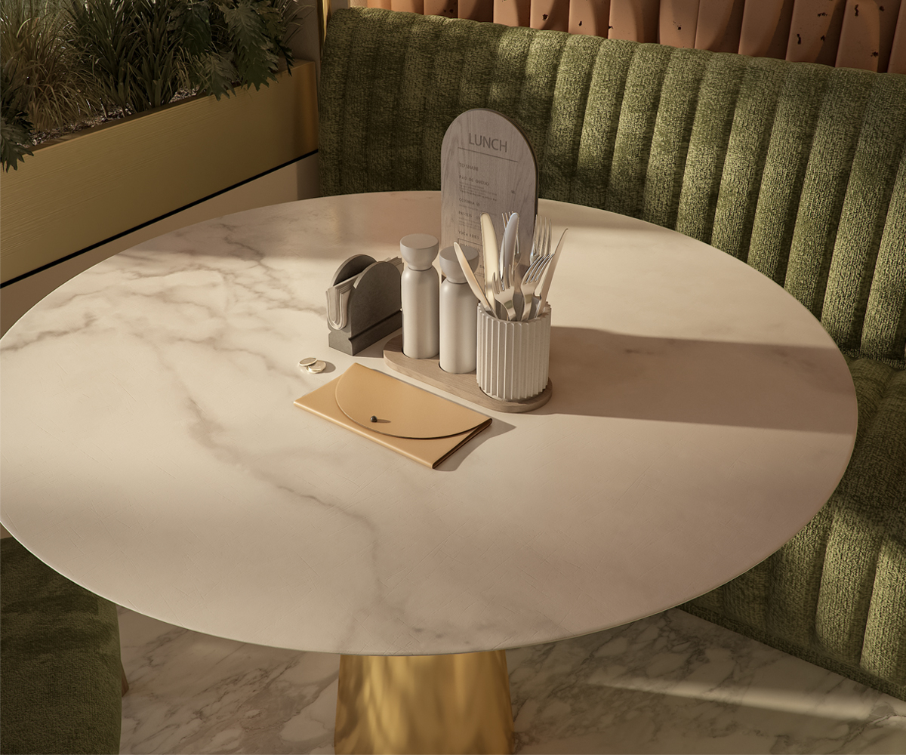
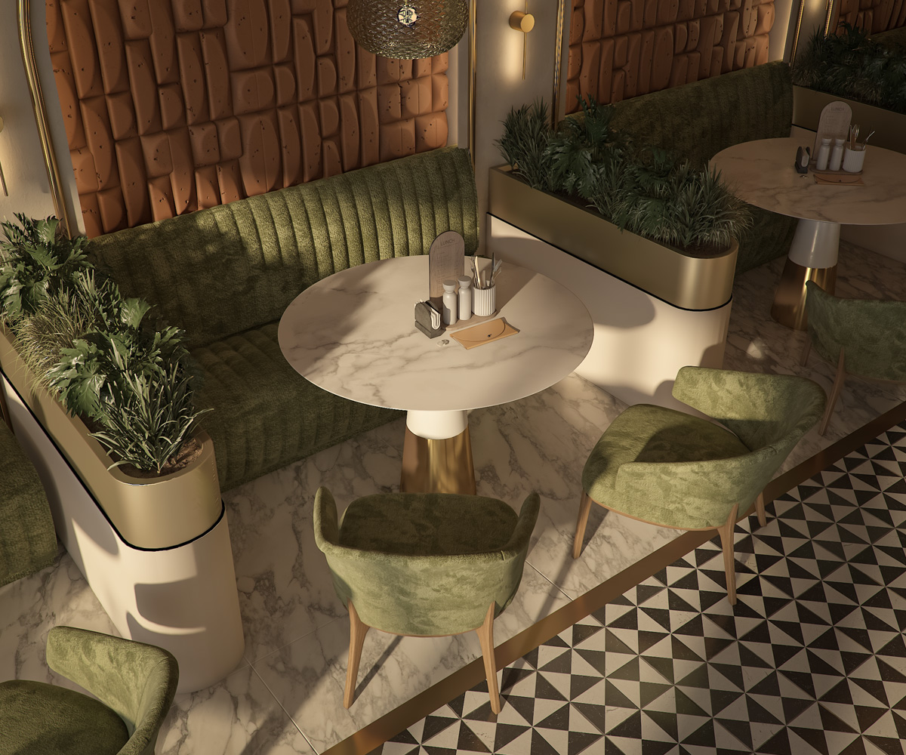
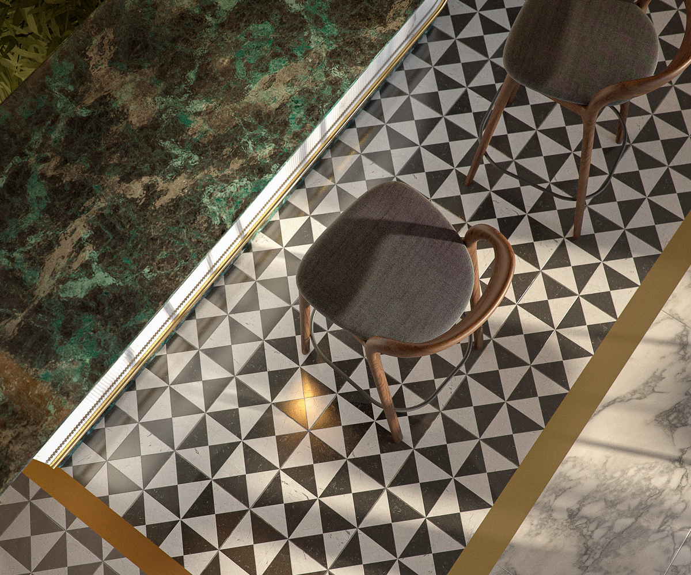
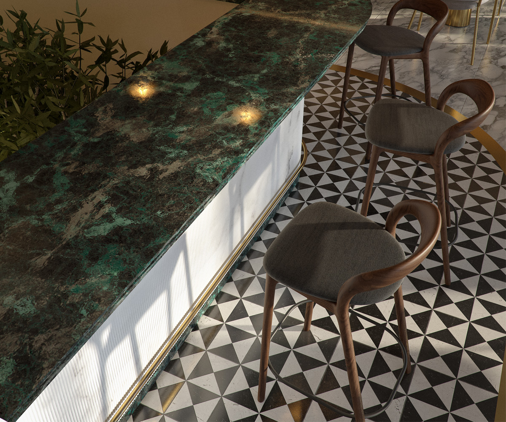
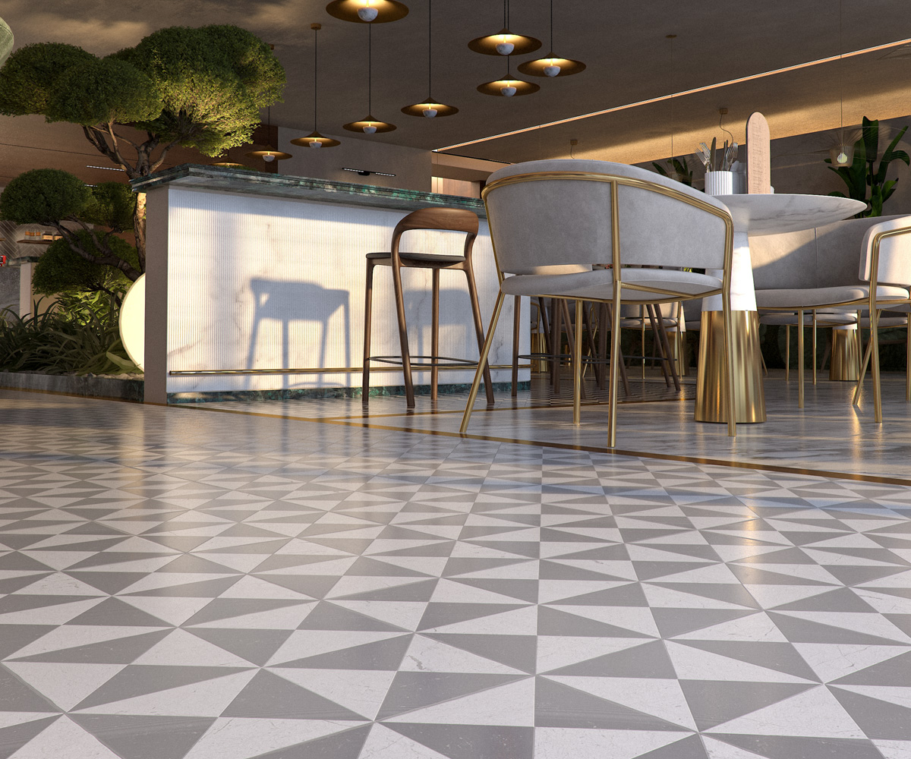
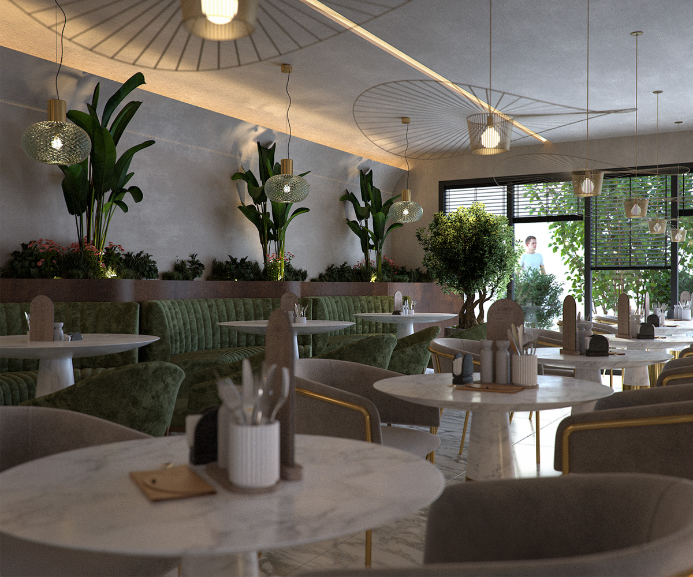
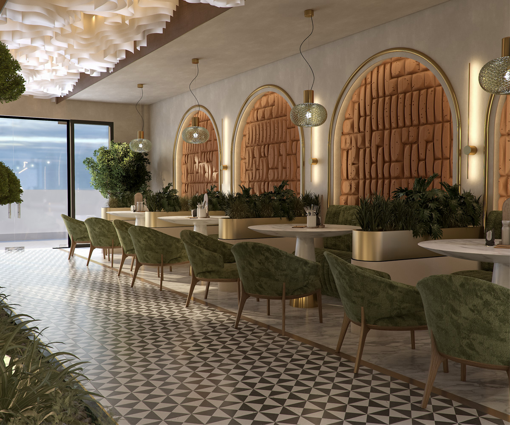
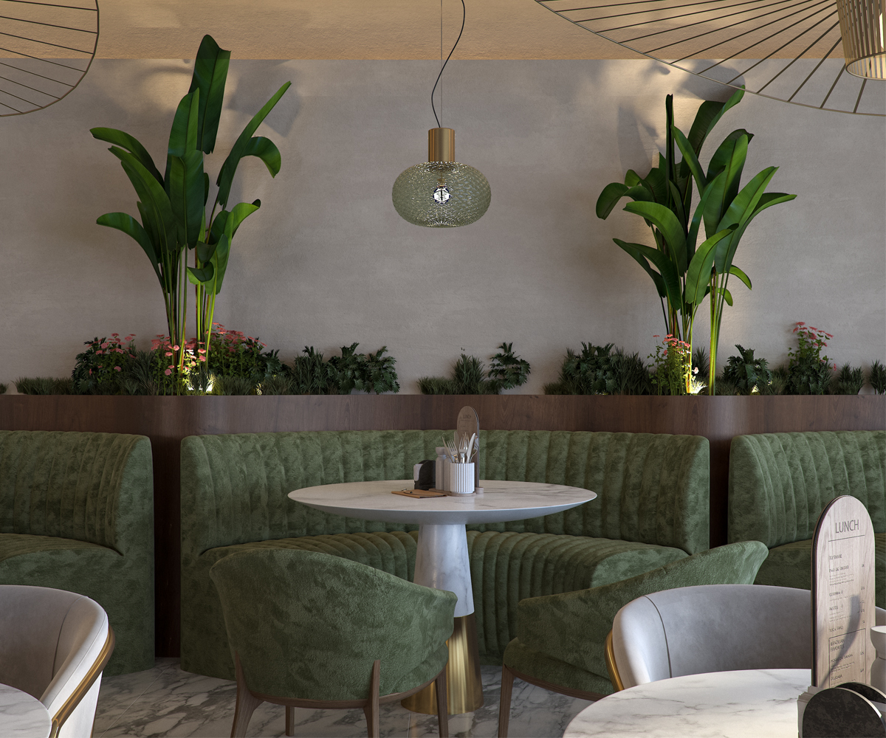

Commercial · Interior Design
Dolce Divano
The Concept
Comfort refined through proportion and texture.
Dolce Divano is an exercise in restrained comfort. Generous forms, layered neutrals and tactile materials create an interior that feels relaxed while retaining a strong architectural discipline.






Material & Atmosphere
Softness, continuity and measured detail.
A restrained material palette gives the interior its calm character. Upholstered forms, warm neutrals and carefully balanced surfaces create depth without visual noise, allowing comfort and architectural clarity to coexist.




A quieter kind of luxury
Comfort can be architectural.
The project demonstrates how softness, material continuity and measured detailing can create a commercial interior with a distinct but understated identity.
Back to projects